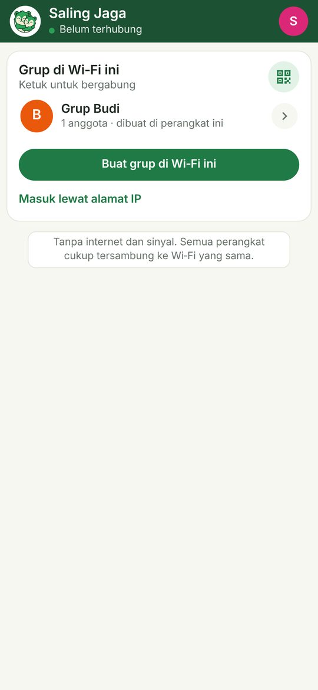
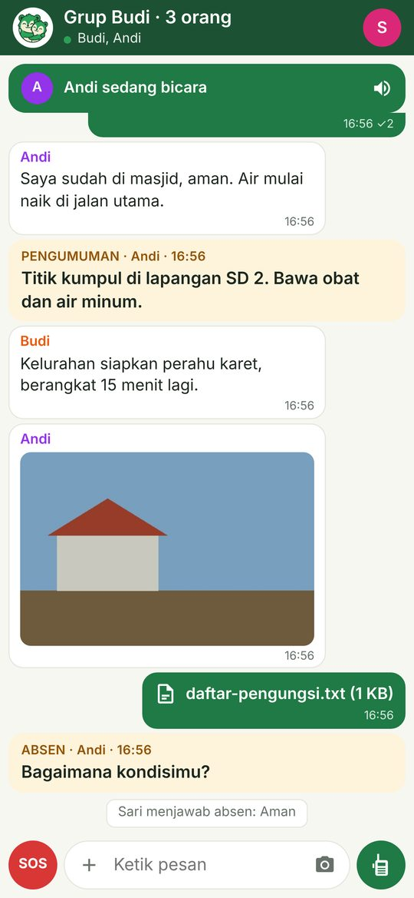
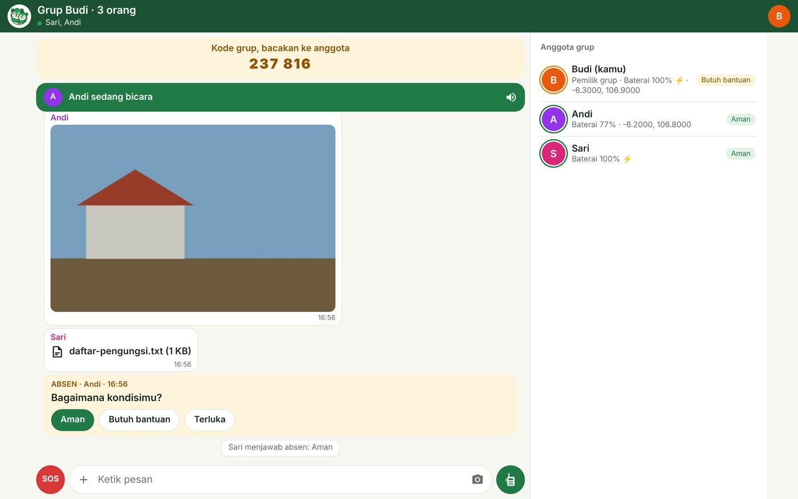

دليل · الحاسوب وMac والمتصفح
الحواسيب وأجهزة iPhone تنضم إلى المجموعة، من المتصفح.
يمكن لحاسوب يعمل بنظام Windows أو Mac أو Linux، أو لجهاز iPhone أو جهاز لوحي، أن يصبح عضوًا في مجموعة ZeroLink دون تثبيت تطبيق ودون إنترنت. انضم إلى شبكة Wi‑Fi نفسها، ثم افتح عنوانًا واحدًا في المتصفح.
- دردشة وصور وملفات
- إعلانات وتفقّد الحضور
- الحالة والاستغاثة
- الاستماع إلى اللاسلكي
اختر طريقة
طريقتان، والنتيجة واحدة.
هاتف أندرويد كخادم
هاتف أندرويد واحد في المجموعة يفتح صفحة للمتصفحات. الأسرع في الميدان: لا حاسوب ولا شيء للتنزيل.
اطّلع على الخطواتتطبيق الحاسوب المحمول
يشغّل الحاسوب ZeroLink بنفسه: ينشئ مجموعة أو ينضم إلى واحدة على شبكة Wi‑Fi النقطة، وتلحق به الهواتف والحواسيب الأخرى من المتصفح. لا شيء للتثبيت: فكّ الضغط وافتح.
تنزيل للحاسوبالطريقة 1 · هاتف أندرويد كخادم
افتح المجموعة للحواسيب وأجهزة iPhone.
- Profile ← Connection & battery ← Open to laptops & iPhonesلا حاجة إلى هاتف آخر أولًا. إن لم يكن الهاتف في مجموعة، اختر Make a Wi‑Fi from this phone (دون راوتر)، أو Use the Wi‑Fi this phone is on. وإن كان في مجموعة، تُفتح تلك المجموعة. (أسماء القوائم كما تظهر في واجهة التطبيق الإنجليزية.)
- يعرض الهاتف الخطوات للأجهزة الأخرىكل خطوة كرمز QR وكنص.
- صِل الجهاز الآخر بشبكة Wi‑Fi نفسهامجموعة Wi‑Fi Direct: امسح رمز QR الخاص بالشبكة على الهاتف الذي أنشأ المجموعة (أو اكتب اسم الشبكة وكلمة المرور الظاهرين). مجموعة Wi‑Fi نقطة القيادة: انضم إلى تلك الشبكة أو نقطة الاتصال.
- امسح رمز QR للعنوان، أو اكتب العنوان في المتصفحمثلًا
http://192.168.49.1:8080. أدخل اسمك، واضغط على المجموعة، واكتب الرمز المكوّن من 6 أرقام إن طُلب.
في مجموعة Wi‑Fi Direct، وحده الهاتف الذي أنشأ المجموعة يستطيع فتح هذه الصفحة. أبقِ ذلك الهاتف يعمل وقريبًا؛ فهاتف واحد يخدم عدة متصفحات في الوقت نفسه.
الطريقة 2 · تطبيق الحاسوب المحمول
نزّله مرة واحدة، ويعمل دون إنترنت.
Java مدمجة، فلا شيء يحتاج إلى تثبيت. نزّله ما دام الإنترنت متاحًا، واحفظه على الحاسوب أو على ذاكرة USB الخاصة بالنقطة.
- فكّ الضغط ثم افتح ZeroLinkيُفتح المتصفح تلقائيًا على
http://localhost:8080. النافذة الصغيرة التي تُفتح معه هي الخادم: اتركها مفتوحة. - أدخل اسمك، ثم أنشئ مجموعة أو انضم إلى واحدةيعرض الحاسوب مجموعات ZeroLink على شبكة Wi‑Fi نفسها. وإن أنشأت مجموعة، اقرأ الرمز المكوّن من 6 أرقام على الآخرين.
- ادعُ الأجهزة الأخرىاضغط على أيقونة QR. تمسحها الهواتف أو أجهزة iPhone أو الحواسيب على شبكة Wi‑Fi نفسها، أو تكتب العنوان، مثلًا
http://192.168.1.5:8080.
Windows: رسالة «Windows protected your PC»
- انقر بزر الفأرة الأيمن على ملف zip ← Extract All…، ثم افتح مجلد
SalingJagaWebوانقر نقرًا مزدوجًا علىSalingJagaWeb.exe. - إن ظهرت شاشة SmartScreen الزرقاء، انقر More info ← Run anyway. تظهر لأن التطبيق غير موقّع بشهادة مدفوعة بعد.
- حين يسأل جدار حماية Windows، فعّل Private networks وانقر Allow access. بدون ذلك لن تتمكن الهواتف الأخرى من فتح الصفحة.
Mac: رسالة «Apple could not verify…»
- انقر نقرًا مزدوجًا على ملف zip لفكّ ضغطه. انقل
SalingJagaWeb.appإلى Applications (ويعمل أيضًا إن تركته في Downloads). - افتحه. إن رفض macOS، اذهب إلى System Settings ← Privacy & Security، ومرّر إلى الأسفل، وانقر Open Anyway وأدخل كلمة مرور جهاز Mac.
- حين يسأل Mac عن اتصالات الشبكة الواردة، اختر Allow.
Linux
- نفّذ
unzip saling-jaga-web-linux.zip، ثم شغّلSalingJagaWeb/bin/SalingJagaWeb. - إن كان لديك جدار حماية (مثل
ufw)، اسمح بمنفذي TCP 8080 و8988 ومنفذ UDP 8987 على الشبكة المحلية.
Mac بمعالج Intel، أو لديك Java 11 فأحدث؟ استخدم ملف jar (150 KB)
نزّل saling-jaga-web.jar وشغّل java -jar saling-jaga-web.jar. الخيارات: --port 8090 لمنفذ آخر، و--en للإنجليزية، و--no-browser لعدم فتح المتصفح.
في المتصفح
يبدو مثل تطبيق الهاتف.



- زر SOS الأحمريرسل إنذارًا إلى الجميع. اضغط مرة أخرى لإلغائه.
- الزر الأخضراضغط مطوّلًا لتتحدث ما دام حقل الرسالة فارغًا؛ ويتحول إلى زر إرسال حين تكتب.
- زر +أرسل صورة أو ملفًا، أو اكتب إعلانًا، أو ادعُ جهازًا آخر.
- صورتك الرمزية في الأعلىحدّد حالتك (بخير، أحتاج مساعدة، مصاب)، أو اطّلع على الأعضاء، أو غادر المجموعة.
أسئلة
من المفيد أن تعرف.
هل المتصفح عضو حقيقي في المجموعة؟
نعم. يظهر كل متصفح كعضو عادي على هواتف أندرويد وأجهزة iPhone، مع حالته وبطاريته. وتبقى الرسائل بين الهواتف مشفّرة كما في التطبيق.
لماذا لا يظهر زر التحدث على هاتفي؟
تسمح المتصفحات بالميكروفون والموقع فقط على الصفحات الآمنة (https) أو على الحاسوب الذي يشغّل التطبيق نفسه. على الأجهزة الأخرى يظل المتصفح يسمع اللاسلكي ويدردش ويرسل الصور ونداءات الاستغاثة. وللتحدث، استخدم تطبيق أندرويد أو iPhone.
الصفحة لا تُفتح على هاتف آخر.
تأكد أنه على شبكة Wi‑Fi نفسها (لا بيانات الجوال)، وأن العنوان يتضمن http:// ورقم المنفذ، وأن جدار حماية الحاسوب يسمح بالاتصالات. بعض شبكات Wi‑Fi العامة تعزل الأجهزة عن بعضها؛ استخدم نقطة اتصال من هاتف أو راوتر النقطة بدلًا منها.
هل يُخرجني انطفاء الشاشة من المجموعة؟
ليس فورًا. يُحفظ مكانك لمدة 5 دقائق. افتح الصفحة مجددًا وستظهر الرسائل التي فاتتك.
ما الذي لا يستطيع المتصفح فعله بعد؟
الرسائل الخاصة، والمكالمات الثنائية، والبحث عن العائلة، ووضع الجسر. هذه تبقى في تطبيقَي أندرويد وiPhone.

حاسوب واحد في النقطة، والجميع متصل.
احفظ تطبيق الحاسوب وملف APK على ذاكرة USB الخاصة بالنقطة قبل أن تحتاجهما.